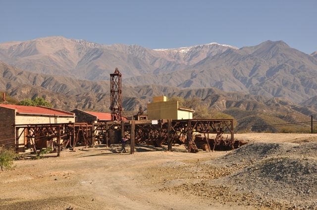
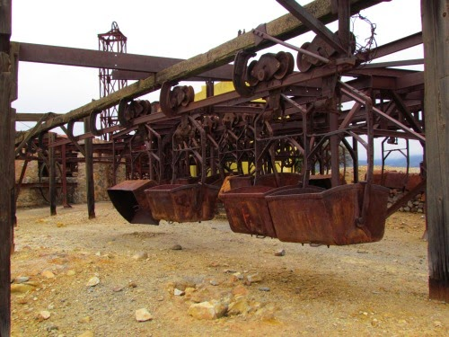
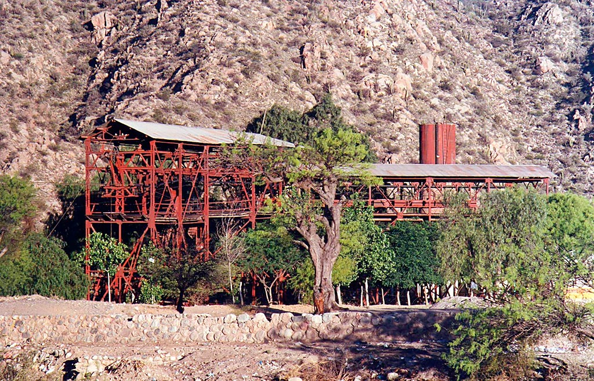

Estacion Cable Carril
La Estación 2 del Cable Carril se posiciona como uno de los principales lugares de visita en el departamento
Chilecito,
no solo de parte de los chieciteños sino particularmente de quienes visitan la Perla del Oeste este verano.
Ubicada a pocos kilómetros de la ciudad, la Estación 2 es por excelencia el lugar indicado para compartir en
familia,
disfrutar de la naturaleza más aún en días de intenso calor y conocer la historia de las actividades que se
llevaban a cabo en este lugar en pleno auge del Cable Carril.

En este predio, la Secretaria de Turismo de la Municipalidad de Chilecito dispone de guías permanentes
para la atención al turista, brindando además servicios de catering en uno de los establecimientos.
Aprovechando la maravillosa vista desde las montañas, también se propone la práctica de astroturismo,
donde se llevan a cabo con enigmáticas charlas en la inmensidad de la oscuridad, con la clara sensación de
poder tocar el cielo con las manos.

Diariamente es importante el flujo de personas que visitan la Estación 2, con un ascenso seguro por calles
asfaltadas,
y un sin fin de escalinatas que prometen compensar el esfuerzo con una maravillosa vista panorámica de la
ciudad.
Desde este lugar, se posiciona al departamento Chilecito como uno de los más visitados de la provincia, por sus
atractivos
turísticos relacionados a la historia, la cultura y el contacto directo con la naturaleza, permitiendo la
práctica de algunas disciplinas en el terreno especial rodeado de montañas.

¿Como llegar a la Estacion
2?